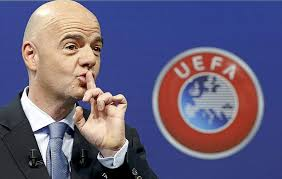

Gianni Infantino, secretario general de la UEFA y candidato a la presidencia de la FIFA, dio ayer a conocer su programa electoral, en el que, por ejemplo, propone ampliar el Mundial a 40 selecciones, ocho más que ahora, y lo justificó así: "Es un acontecimiento único, que cada cuatro años cautiva al mundo, y es la herramienta más poderosa para promocionar el fútbol en todo el planeta". Recordemos que la Eurocopa, con su apoyo, ya se amplió de 16 a 24 equipos, como será este año.
El programa de Infantino se asienta en tres pilares: "reformas y buena gobernanza, democracia y participación y desarrollo del fútbol". De ser elegido, Infantino introducirá "un límite de 12 años como máximo en la duración de los mandatos del presidente". Además, cada Confederación tendrá que esperar al menos dos ediciones para volver a organizar un Mundial.